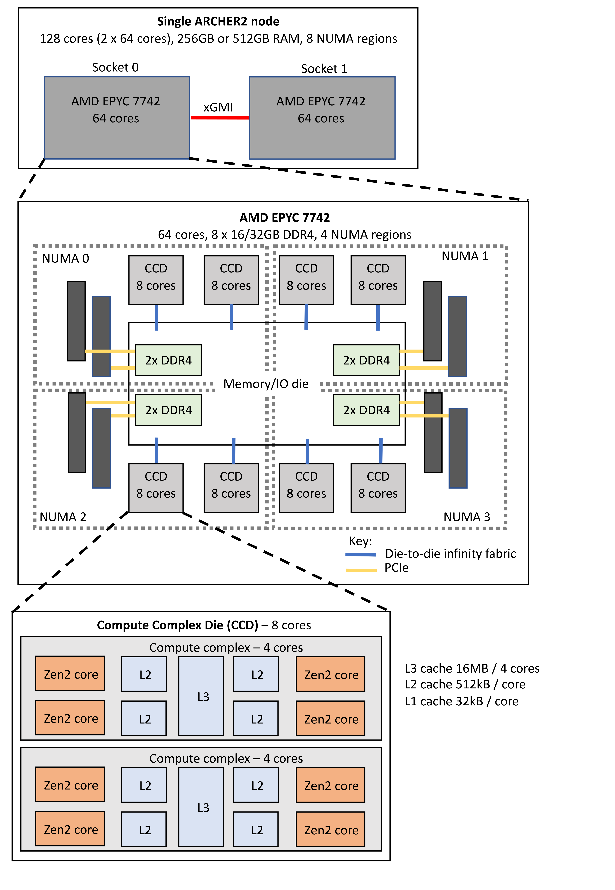

ARCHER2 hardware
Note
Some of the material in this section is closely based on information provided by NASA as part of the documentation for the Aitkin HPC system.
System overview
ARCHER2 is a HPE Cray EX supercomputing system which has a total of 5,860 compute nodes. Each compute node has 128 cores (dual AMD EPYC 7742 64-core 2.25GHz processors) giving a total of 750,080 cores. Compute nodes are connected together by a HPE Slingshot interconnect.
There are additional User Access Nodes (UAN, also called login nodes), which provide access to the system, and data-analysis nodes, which are well-suited for preparation of job inputs and analysis of job outputs.
Compute nodes are only accessible via the Slurm job scheduling system.
There are two storage types: home and work. Home is available on login nodes and data-analysis nodes. Work is available on login, data-analysis nodes and compute nodes (see I/O and file systems).
This is shown in the ARCHER2 architecture diagram:

The home file system is provided by dual NetApp FAS8200A systems (one primary and one disaster recovery) with a capacity of 1 PB each.
The work file system consists of four separate HPE Cray L300 storage systems, each with a capacity of 3.6 PB. The interconnect uses a dragonfly topology, and has a bandwidth of 100 Gbps.
The system also includes 1.1 PB burst buffer NVMe storage, provided by an HPE Cray E1000.
Compute node overview
The compute nodes each have 128 cores. They are dual socket nodes with two 64-core AMD EPYC 7742 processors. There are 5,276 standard memory nodes and 584 high memory nodes.
Note
Note due to Simultaneous Multi-Threading (SMT) each core has 2 threads, therefore a node has 128 cores / 256 threads. Most users will not want to use SMT, see Launching parallel jobs.
| Component | Details |
|---|---|
| Processor | 2x AMD Zen2 (Rome) EPYC 7742, 64-core, 2.25 Ghz |
| Cores per node | 128 |
| NUMA structure | 8 NUMA regions per node (16 cores per NUMA region) |
| Memory per node | 256 GB (standard), 512 GB (high memory) |
| Memory per core | 2 GB (standard), 4 GB (high memory) |
| L1 cache | 32 kB/core |
| L2 cache | 512 kB/core |
| L3 cache | 16 MB/4-cores |
| Vector support | AVX2 |
| Network connection | 2x 100 Gb/s injection ports per node |

Each socket contains eight Core Complex Dies (CCDs) and one I/O die (IOD). Each CCD contains two Core Complexes (CCXs). Each CCX has 4 cores and 16 MB of L3 cache. Thus, there are 64 cores per socket and 128 cores per node.
More information on the architecture of the AMD EPYC Zen2 processors:
AMD Zen2 microarchitecture
The AMD EPYC 7742 Rome processor has a base CPU clock of 2.25 GHz and a maximum boost clock of 3.4 GHz. There are eight processor dies (CCDs) with a total of 64 cores per socket.
Tip
The processors can only access their boost frequencies if the CPU frequency is set to 2.25 GHz. See the documentation on setting CPU frequency for information on how to select the correct CPU frequency.
Note
When all 128 compute cores on a node are loaded with computationally intensive work, we typically see the processor clock frequency boost to around 2.8 GHz.
Hybrid multi-die design:
Within each socket, the eight processor dies are fabricated on a 7 nanometer (nm) process, while the I/O die is fabricated on a 14 nm process. This design decision was made because the processor dies need the leading edge (and more expensive) 7 nm technology in order to reduce the amount of power and space needed to double the number of cores, and to add more cache, compared to the first-generation EPYC processors. The I/O die retains the less expensive, older 14 nm technology.
2nd-generation Infinity Fabric technology:
Infinity Fabric technology is used for communication among different components throughout the node: within cores, between cores, between core complexes (CCX) in a core complex die (CCD), among CCDs in a socket, to the main memory and PCIe, and between the two sockets. The Rome processors are the first x86 systems to support 4th-generation PCIe, which delivers twice the I/O performance (to the Slingshot interconnect, storage, NVMe SSD, etc.) compared to 3rd-generation PCIe.
Processor hierarchy
The Zen2 processor hierarchy is as follows:
- Core: A CPU core has private L1I, L1D, and L2 caches, which are shared by two hyperthreads on the core.
- CCX: A core complex includes four cores and a common L3 cache of 16 MB. Different CCXs do not share L3.
- CCD: A core complex die includes two CCXs and an Infinity Link to the I/O die (IOD). The CCDs connect to memory, I/O, and each other through the IOD.
- Socket: A socket includes eight CCDs (total of 64 cores), a common centralized I/O die (includes eight unified memory controllers and eight IO x16 PCIe 4.0 lanes—total of 128 lanes), and a link to the network interface controller (NIC).
- Node: A node includes two sockets and two network interface controllers (NIC).
CPU core
AMD 7742 is a 64-bit x86 server microprocessor. A partial list of instructions and features supported in Rome includes SSE, SSE2, SSE3, SSSE3, SSE4a, SSE4.1, SSE4.2, AES, FMA, AVX, AVX2 (256 bit), Integrated x87 FPU (FPU), Multi-Precision Add-Carry (ADX), 16-bit Floating Point Conversion (F16C), and No-eXecute (NX). For a complete list, run cat /proc/cpuinfo on the ARCHER2 login nodes.
Each core:
- Can sustain execution of four x86 instructions per cycle, using features such as the micro-op cache, advanced branch prediction, and prefetching. The prefetcher works on streaming data and on variable strides, allowing it to accelerate many different data structures.
- Has two 256-bit Fused Multiply-Add (FMA) units and can deliver up to 16 double-precision floating point operations (flops) per cycle. Thus, the peak double-precision flops per node (at base frequency) is: 128 cores x 2.25 GHz x 16 = 4.6 teraflops.
- Can support Simultaneous Multi-threading (SMT), allowing two threads to execute simultaneously per core. SMT is available on ARCHER2 compute nodes but example submission scripts all use physical cores only as SMT is not usually beneficial for HPC applications.
Cache hierarchy
The cache hierarchy is as follows:
-
op cache (OC): 4K ops, private to each core; 64 sets; 64 bytes/line; 8-way. OC holds instructions that have already been decoded into micro-operations (micro-ops). This is useful when the CPU repeatedly executes a loop of code. Using OC improves:
- Pipeline latency: because the op cache pipeline is shorter than the traditional fetch and decode pipeline.
- Bandwidth: because the maximum throughput from the op cache is eight instructions per cycle, whereas the maximum throughput from the traditional fetch and decode pipeline is four instructions per cycle.
- Power: because there is no need to re-decode instructions.
-
L1 instruction cache: 32 KB, private to each core; 64 bytes/line; 8-way. The processor fetches instructions from the instruction cache in 32-byte naturally aligned blocks.
- L1 data cache: 32 KB, private to each core; 64 bytes/line; 8-way; latency: 7–8 cycles for floating point and 4–5 cycles for integer; 2 x 256 bits/cycle load bandwidth to registers; 1 x 256 bits/cycle store bandwidth from registers; write-back policy.
- L2 cache: 512 KB, private to each core; unified; inclusive of L1 cache; 64 bytes/line; 8-way; latency: >= 12 cycles; 1 x 256 bits/cycle load bandwidth to L1 cache; 1 x 256 bits/cycle store bandwidth from L1 cache; write-back policy.
- L3 cache: 16 MB shared among four cores in a core complex (CCX); different CCXs do not share L3; total of 256 MB per socket. Within each CCX: 64 bytes/line; 16-way; latency: 39 cycles on average.
Note
With the write-back policy, data is updated in the current level cache first. The update in the next level storage is done later when the cache line is ready to be replaced.
Note
If a core misses in its local L2 and also in the L3, the shadow tags are consulted. If the shadow tag indicates that the data resides in another L2 within the CCX, a cache-to-cache transfer is initiated. 1 x 256 bits/cycle load bandwidth to L2 of each core; 1 x 256 bits/cycle store bandwidth from L2 of each core; write-back policy; populated by L2 victims.
Intra-socket interconnect
The Infinity Fabric, evolved from AMD's previous generation HyperTransport interconnect, is a software-defined, scalable, coherent, and high-performance fabric. It uses sensors embedded in each die to scale control (Scalable Control Fabric, or SCF) and data flow (Scalable Data Fabric, or SDF).
- The SCF uses sensors to monitor die temperature, speed, and voltage across all cores within the dies and controls power management, security, reset, etc.
- The SDF connects the L3 caches to memory and to the configurable I/O lanes. SDF uses the configurable I/O lanes for memory-coherent communications between compute elements on a single die, between different dies on a socket, and between sockets in a node.
- The die-to-die Infinity Fabric bandwidth is 32 bytes for read and 16 bytes for write per Infinity Fabric clock (which has a maximum speed of 1,467 MHz).
Inter-socket interconnect
Two EPYC 7742 SoCs are interconnected via Socket to Socket Global Memory Interconnect (xGMI) links, part of the Infinity Fabric that connects all the components of the SoC together. On ARCHER2 compute nodes there are 3 xGMI links using a total of 48 PCIe lanes. With the xGMI link speed set at 16 GT/s, the theoretical throughput for each direction is 96 GB/s (3 links x 16 GT/s x 2 bytes/transfer) without factoring in the encoding for xGMI, since there is no publication from AMD available. However, the expected efficiencies are 66–75%, so the sustained bandwidth per direction will be 63.5–72 GB/s. xGMI Dynamic Link Width Management saves power during periods of low socket-to-socket data traffic by reducing the number of active xGMI lanes per link from 16 to 8.
Memory subsystem
The Zen 2 microarchitecture places eight unified memory controllers in the centralized I/O die. The memory channels can be split into one, two, or four Non-Uniform Memory Access (NUMA) Nodes per Socket (NPS1, NPS2, and NPS4). ARCHER2 compute nodes are configured as NPS4, which is the highest memory bandwidth configuration geared toward HPC applications.
With eight 3,200-GHz memory channels, an 8-byte read or write operation taking place per cycle per channel results in a maximum total memory bandwidth of 204.8 GB/s per socket.
Each memory channel can be connected with up to two Double Data Rate (DDR) fourth-generation Dual In-line Memory Modules (DIMMs). On ARCHER2 standard memory nodes, each channel is connected to a single 16 GB DDR4 registered DIMM (RDIMM) with error correcting code (ECC) support leading to 128 GB per socket and 256 GB per node. For the high memory nodes, each channel is connected to a single 32 GB DDR4 registered DIMM (RDIMM) with error correcting code (ECC) support leading to 256 GB per socket and 512 GB per node.
Interconnect details
ARCHER2 has a HPE Slingshot interconnect with 200 Gb/s signalling per node. It uses a dragonfly topology:
-
Nodes are organized into groups.
- 128 Nodes in a group.
- Electrical links between Network Interface Card (NIC) and switch.
- 16 switches per group.
- 2x NIC per node.
- All-to-all connection amongst switches in a group using electrical links.
-
All-to-all connection between groups using optical links.
- 2 groups per ARCHER2 Cabinet.
Storage details
Information on the ARCHER2 parallel Lustre file systems and how to get best performance is available in the IO section.